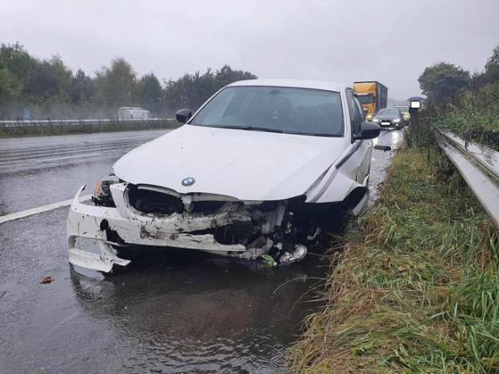

Dan Keane
3 Oct 2020, 10:25 | Updated: 3 Oct 2020, 16:08.
THE UK has been lashed by torrential rain,
flash floods and strong winds today in a weekend washout after Storm Alex swept in from France.
Dramatic images showed cars deluged after flooding hit the South of England
this morning as huge waves battered the coastline - with the worst of the weather yet to come.
Read our
UK weather live blog
for the very latest news and forecasts.
A car is seen completely submerged near Ingatestone, Essex early this morning after heavy rainfall.
Credit: NC
A woman was left stranded after she drove the car into a 4ft flood.
Credit: NC
She was rescued by her husband this morning after the car was totally submerged in the floodwater.
Credit: NC
Big waves crash into the Monkey Hut at the Portreath seafront in Cornwall as Storm Alex hit this morning.
Credit: SWNS:South West News Service

A car was damaged following a collision on the M56 in Cheshire in the wet conditions.
Credit: PA:Press Association
The Met Office has issued amber weather warnings for large swathes of the country with
heavy flooding posing a “danger to life” in hard-hit areas.
Pictures show Britain's coastline being battered by huge waves this morning,
as coastguards warned swimmers to steer clear of the sea.
In the South East, flooding has already hit London and
Essex as pictures show a woman being rescued from her car
after driving into a 4ft flood on a road near Ingatestone.
And Gadebridge Park in Hemel Hempstead,
Hertfordshire, was also completely submerged this morning after torrential rain overnight.
Drew Parkinson, Area Commander for South Devon and South-East Cornwall Coastline,
also warned today of "dangerous conditions" on North and East facing coastlines.
He said coastguards had been forced to talk one brazen swimmer out of plunging
into 15ft waves this morning in Torcross,
Devon - where 70mph gales were sending huge waves crashing over coastal roads.
It comes after Storm Alex brought heavy downpours and strong gusts to the southern edge
of the country yesterday,
with the highest gust of 71mph recorded at Berry Head on the Devon coast.
People living between
Cornwall
in the west and
Kent
in the east,
as well as those in north of Cardiff in
Wales,
were the first to feel the full force of the storm yesterday afternoon.
Many parts of the UK will see 25-50mm of rainfall today,
with totals of 70-90mm expected over higher ground of Wales and south-west England.
And the Met Office has warned that the miserable weather
is likely to cause havoc for motorists - with significant disruption to travel expected.
The Maritime and Coastguard Agency also pleaded
with people not to take "risky selfies", adding: "It could be the last one you ever take."
Amber weather warnings are also in place for Wales,
the West Midlands, south-west England and also parts of eastern Scotland today.
Yellow rain warnings are also in place for the east of England, London and the South East plus much of Wales,
western England and eastern Scotland where heavy rain is set to push in from the north west.
FLOOD WARNING
Carol Holt, flood duty manager at the Environment Agency,
said that "widespread and persistent rain is likely to lead to flooding"
in some areas over the weekend.
She added: "We urge people to stay away from swollen rivers and not to drive though flood water
- it is often deeper than it looks and just 30cm of flowing water is enough to float your car."
RAC Breakdown spokesman Rod Dennis
added that road conditions will be "miserable if not downright dangerous" for drivers this weekend.
There is also a chance of fast flowing or deep floodwater causing a “risk to life”,
while some communities could see power cuts.
A flood warning is currently in force on Swanage bay on the Dorset Coast,
with the government's
flood information service
urging locals to take caution along beaches,
promenades and coastal roads.
There are also 23 other flood alerts in place across the nation,
including near Putney Bridge in South West London and the River Bure on the Norfolk coast.
Amber and yellow weather warnings are in place
The miserable weather conditions have even forced
Ascot to abandon today's card because of a waterlogged course.
The downpour at the Berkshire track began after racing on Friday,
and brought more than 36mm of rain by 5.30am this morning.
A Tweet from the course read: "Update - Following over 36mm rain since racing yesterday,
today's meeting has been abandoned.
The track is unsafe for racing due to waterlogging and false patches of ground."
Speaking on today's weather, Met Office meteorologist Greg Dewhurst said:
"It is going to be raining and horrible all day.
"If you have to travel take extra time on your journey,
the roads will be pretty treacherous at times with poor visibility due to the heavy rain."
It comes after Storm Alex caused weather chaos yesterday,
with areas experiencing significant power cuts.
Scottish and Southern Electricity Networks recorded unplanned power outages in more than 20 areas
including Portsmouth, Southampton and towns east of Reading,
according to the customer interactive map.
Trees blown over like skittles in the howling gales blocked many roads including in Cullompton,
Newton Abbot and Exeter yesterday.
Devon and Cornwall police described driving conditions as
"horrendous" and said there had already been crashes in the past 24 hours.
One traffic cop said:
"The heavy rain is making things very treacherous yet people are still
tearing along like there's no tomorrow.
"Please slow down because the roads can get flooded and
cars start aquaplaning when the tyres lose their grip."